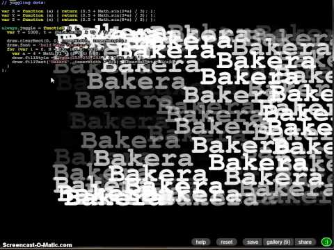
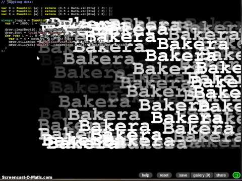

Im zweiten Teil meiner Video-Serie über das LiveCoding wende ich mich diesmal drei weiteren Systemen zu: Scratch, LiveCode und Livecodelab.
Viel Spaß!
Alle wichtigen Links stehen auf meiner Seite im Artikel
LiveCoding.
Im zweiten Teil meiner Video-Serie über das LiveCoding wende ich mich diesmal drei weiteren Systemen zu: Scratch, LiveCode und Livecodelab.
Viel Spaß!
